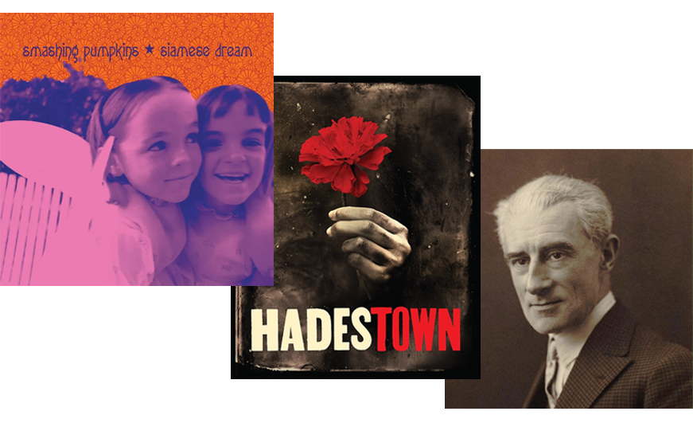
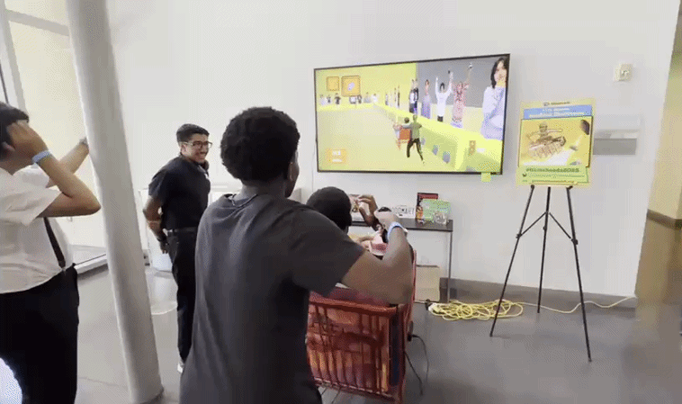
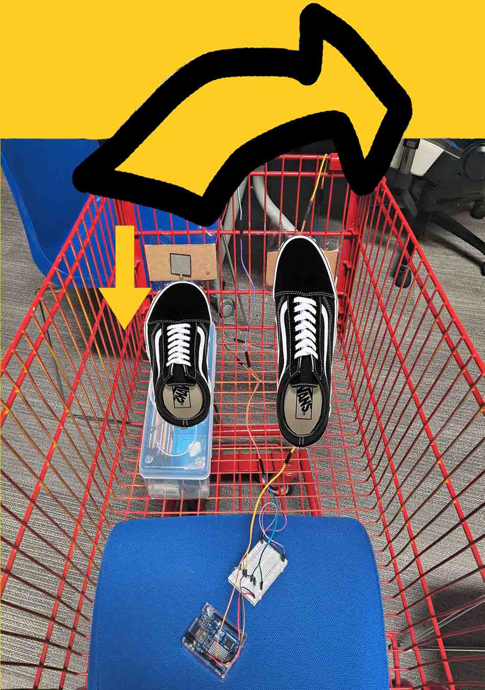
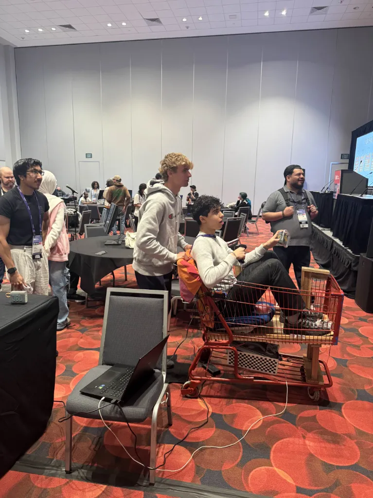
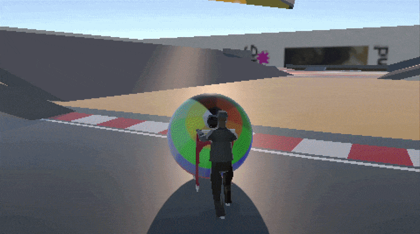
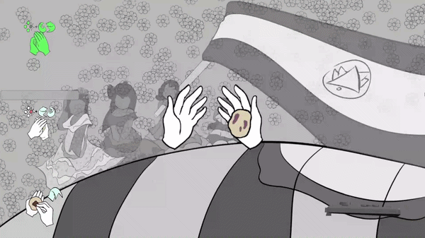
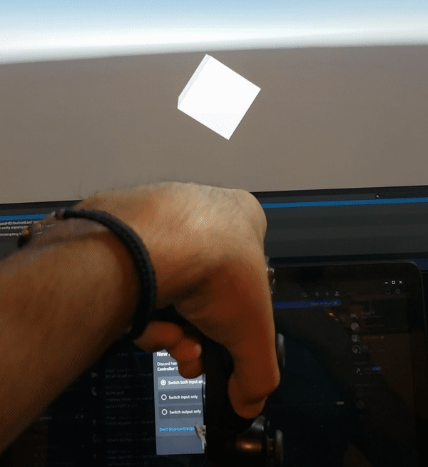
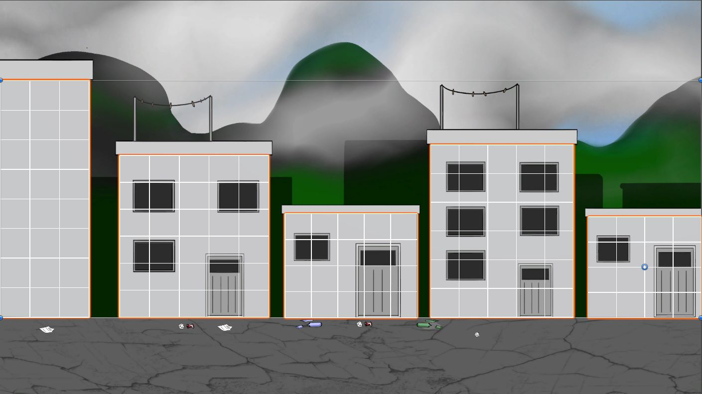

About Me
This is my audio sub-portfolio, my main portfolio can be found here
I'm a game designer and engineer from Oakland, CA. I'm a CS: Game Design major at UC Santa Cruz pursuing a minor in Western Music, and I make music in REAPER in my free time. I'm also a classical singer and I perform with the UCSC Chamber Singers and UCSC Opera. I enjoy a wide range of music, from heavy rock music to musical theater to classical music.
Projects
Music for Mailmatta
3D Momentum Based Platformer with a Parry Mechanic
In addition to design and programming, I made the music for the title screen and tutorial of this game. In both tracks I used bright synths with plenty of reverb to create a futuristic atmosphere. Additionally, for percussion I chose rock drumming to provide a more driving, rebellious element to match the fast paced gameplay. The title screen is exciting to draw ppl in, has the beat drop. The tutorial is more calming but still kinda hype so players can have a calm environment to learn mechanics while still feeling fast and hype.
Accoustic Recording Project

SPREE is an alternative control game, and I built the controller.
Before this project, I had virtually no experience with hardware. My task was to turn a shopping cart into a co-op racing game, in which one player sits inside the cart and steers while the other jogs in place behind the cart to accelerate.

I researched many components that could act as input devices and iterated on many control layouts.

The final setup:
- Sensors inside the cart for steering with feet
- Sensors under a mat behind the cart for jogging
- Barcode Scanner for powerups
In retrospect, the force sensors were not designed to handle the weight of an entire person, and the signal from the jogging sensors became somewhat unreliable.

Movement system
The visible model of the kart follows an invisible sphere collider that rolls freely, resulting in movement that works great for slopes, jumps, and rough terrain, and feels smooth and responsive.
Cooking Rhythm Game

Pupusa Time uses motion controls to mimic the steps of preparing a pupusa.
Unity does not have native support for motion input, so I used third-party software which has few online resources, leading me to look through the source code to troubleshoot connectivity issues. I used the accelerometer to detect movement along the pitch and roll axes, and the gyroscope (in combination with a button press) to detect movement along the yaw axis.

We relied on the Dualshock 4 controller until I discovered that when building the game, the Dualshock 4 wouldn't send motion input.
I then pivoted to Joycons.
2D Paint Shooter

The enemies move along a grid, choosing a new cell to travel to after attacking.

The player's paint snaps to a grid, which I used to calculate how much of each building the player has painted. The grid, although invisible, also makes it clear to players that painting in the same spot twice is unproductive, encouraging them to fully cover buildings.